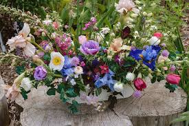

Ceramic Potted Herbs
$7.99
Was $17.99

Brightening San Francisco since 1995
Beautiful handcrafted bouquets, fresh seasonal flowers, and elegant floral arrangements designed to brighten your day.
Shop Weekly SpecialsFran's Flowers was founded in 1995 by Francine Miller to share joy, beauty, and connection with the Mission District of San Francisco.
Thirty years later we remain rooted in that vision, brightening lives with every bouquet while supporting our community.
Ten percent of each sale continues to fund efforts to fight homelessness across the Bay Area.
$7.99
Was $17.99

$19.99
Was $29.99

$12.99
Was $19.99
Featuring roses, tulips, eucalyptus, and soft pastel blooms inspired by spring mornings.
Available for a limited time only.
A cheerful arrangement filled with colorful seasonal blooms, fresh greenery, and bright spring colors.
Best for birthdays 🌸

“The flowers were even more beautiful in person. Incredible quality and amazing service.”
“Every bouquet feels unique and thoughtfully designed. Easily my favorite flower shop.”
“The atmosphere, flowers, and customer care are all amazing. Highly recommend Fran’s Flowers.”
“Perfect flowers for my anniversary. Delivery was quick and beautifully arranged.”